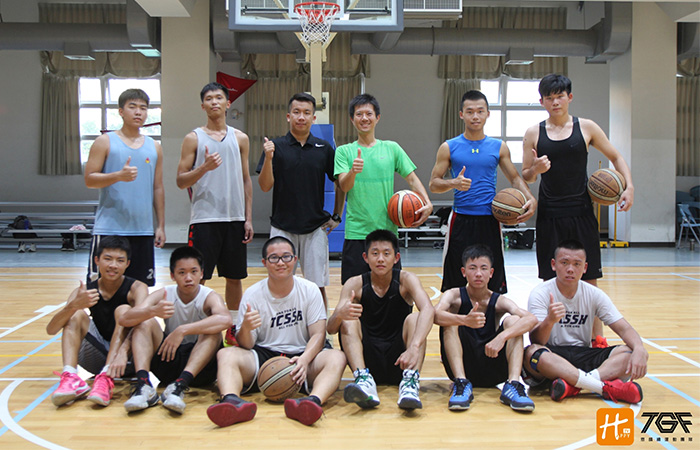

貼文時間：2017/09/13

台中二中位於台中市北區英士路上，籃球隊成立有著40年的歷史，是台 中老牌球隊之一 ，數次打入南區複賽，在市內的各大杯賽也屢獲佳績，球員在升學表現上也有相當成果，同為學生籃球的理念，中二中也努力地耕耘著……。
中二中籃球隊創立40餘年，在籃球圈內算是相當具有歷史性，其球隊理念為提供學生運動平台而成，也期待透過籃球隊的建立，有效提升校園的運動風氣，促進學生身心靈健康。教練李孟學老師表示，校方在於球隊的成績上是不給予壓力的，主要還是提倡學生運動為主，保持著想要資源就去爭取的態度，激進隊員們的求勝心。李教練也說，希望球員透過球隊訓練的過程，學會做人處世的態度，及提升其對挫折的忍耐度。
在訓練上，李教練表示，球員的「態度」是最重要的部分，更提到一點，要清楚自己的實力，不要好高騖遠並專注於場上的狀況。由於球員是透過徵選進入球隊，通常在國中是沒有校隊經驗的，也因此「因材施教」成為教練訓練的方向。球風部分，教練表示，進攻主要是以轉換快攻為主軸，透過盯人防守增加進攻機會，也因此偏重於防守上的訓練，呼應李教練說:「進攻靠天分，防守靠努力。」
在106學年聯賽的調整部分，教練提及上述的因材施教外，特別提到12號的蔡宇軒，身高183的宇軒，有不錯的運球能力及協調性，希望明年三月能將他推上體育績優生的管道，也提及會栽培高一升高二這批球員，增強團隊的戰術執行力，期待未來這群球員能重振二中雄風。
帶隊達12年的李孟學教練，談及最有印象的一件事是什麼，他說到:「最有印象不是球隊絕殺敵隊，也不是拿下什麼杯賽冠軍，而是在一場比賽中，一個暫停後，設計的戰術，應對的空檔，完美的執行，這樣的一球就足以讓內心砰然心跳記憶長存了！」接著也說到，安撫球員也是印象深刻的事情，輸球贏球，就像看著自己小孩成長，同樣感同身受。
對於乙級未來發展導向的看法，李教練抱有正向的看法，除了使基層籃球隊得以被關注，更使乙級聯賽的賽務問題有機會再檢視，例如:兩人裁判制、比賽時間等……。
中二中在104學年度拿下乙級聯賽台中區預賽第五名，前進南區複賽，此外，持續在台中市內杯賽奪得佳績，談及目標時，李教練呼應前述勿好高騖遠，將短期的目標放在台中區前五，長期目標也期待能打造傳統，前進全國八強！